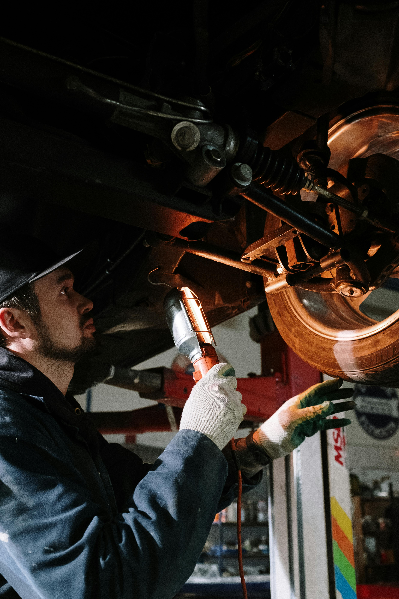

Latest Trends in 2025

Solid-State Batteries
Revolutionizing EVs with longer ranges, faster charging, and enhanced safety through solid-state technology.
AI-Driven Manufacturing
AI optimizes production lines, reducing costs and improving quality in smart factories.

Digital Retail
Virtual showrooms and blockchain streamline vehicle sales, enhancing customer experience.
Automotive Value Chain
The automotive value chain encompasses the sequential processes from innovation to after-sales, ensuring vehicles meet market demands efficiently.
1

R&D and Engineering Services
Innovating future mobility solutions
2

Product Development
Designing cutting-edge vehicles
3

Supply Chain
Streamlining component sourcing
4

Manufacturing
Building high-quality vehicles
5
Sales/Dealer Operations & Marketing
Engaging customers effectively
6

After-Sales
Ensuring customer satisfaction